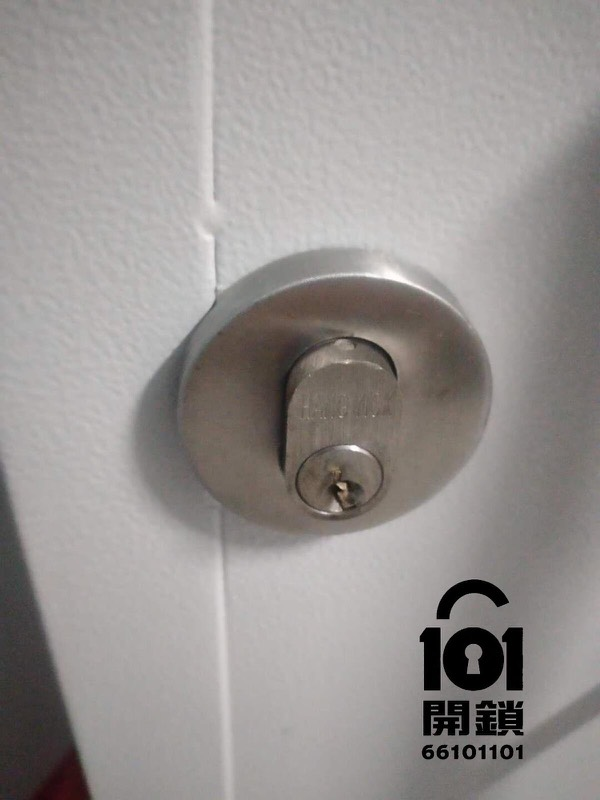

门仍可打开，断匙有少量露出
先不要再转动锁芯。只有断匙明显露出时，才可沿钥匙进出方向轻力直线夹取；只要有卡住就应立即停止。
香港断匙取出及紧急开锁指南
钥匙断在锁芯里时，最重要的不是立刻用工具乱撬，而是先确认：门能否打开、断匙有没有露出、钥匙之前是否已经卡住或拧不动。错误处理可能让原本可取出的断匙变成要换锁芯。

先不要再转动锁芯。只有断匙明显露出时，才可沿钥匙进出方向轻力直线夹取；只要有卡住就应立即停止。
这是较高风险情况。不要插备用钥匙、不要用回形针、尖物或胶水。应拍照查询紧急开锁及断匙取出。
断掉的原钥匙不能继续使用。先检查锁芯是否磨损或卡住，再决定使用备用钥匙、重新配钥匙或更换锁芯。
避免二次损坏
以下动作未必每次都会让锁芯报废，但确实会大幅增加取出难度和维修成本，尤其当你已经进不了门时。
胶水可能流进锁芯内部，粘住弹珠和弹簧。即使断匙最后取出，锁芯仍可能需要更换。
没有稳固的夹取位置，尖物大多只会把断匙推得更深或刮伤锁孔。
另一把钥匙可能把断匙压斜、夹紧或刮伤锁芯，让原本可保留的锁芯变成需要更换。
紧急情况下乱喷油可能混合灰尘，让锁芯更黏。先拍照查询，比盲目加料更稳妥。
门已锁住、断匙完全看不到、钥匙之前已经卡住拧不动、已试过胶水或硬物，或涉及大门铁闸、公司门锁时，都不适合继续自行处理。
传相初步评估
101开锁服务流程
师傅会先确认断匙位置、门是否仍可打开、是否被锁在门外，以及有没有试过胶水或硬物；再判断能否取出断匙、是否需要紧急开锁，以及后续要不要配钥匙或换锁芯。
| 步骤 | 处理安排及确认事项 |
|---|---|
| 1初步评估 | 相片初评及说明风险查看锁型、断匙位置和是否曾自行处理，说明能否尝试非破坏取出，或是否要先处理开门。 |
| 2确认报价 | 确认报价和到场条件时段、地区、锁型、断匙深度和是否需要换锁芯都会影响报价。出发前会先确认总费用范围。 |
| 3核实授权 | 核实住户或使用权紧急开锁涉及财物安全。会按情况核实住户、租客、公司职员或相关授权。 |
| 4处理断匙 | 先取断匙，再检查锁芯目标是尽量保留原有锁芯，但如果锁芯卡死、磨损或受胶水影响，不能保证每次都可保留。 |
| 5后续处理 | 需要时配钥匙或换锁芯断掉的原钥匙不能继续使用。没有备用钥匙或锁芯已磨损时，可能需要重新配钥匙或更换锁芯。 |
| 6完成测试 | 完成后测试开关完成后应测试门内门外开关、斜舌回弹和备用钥匙顺畅度，减少短期内再次卡钥匙或断钥匙。 |
断匙取出收费
师傅会按出发前确认的报价与现场核实的处理方案收费；如现场情况与相片不同或需要增加工序，会先说明原因及相关费用，再确认是否继续。
行李锁与挂锁
行李锁、TSA锁和挂锁通常客单价较低，未必每次都值得紧急上门。但如果你在机场、酒店、公司或重要物品被锁住，仍可先传相查询是否适合处理。
先确认是否有备用开启方式、是否仍在保养或可更换锁件。不要用力拧TSA锁孔，以免内部零件扭歪。
低价挂锁可能更换比维修划算；但若挂锁锁住仓门、闸门、行李或重要设备，应先评估是否需要安全开启。
常见问题
只有在断匙明显露出且停止转动锁芯后，才可考虑沿钥匙进出方向轻力直线夹取。如有卡住、钥匙之前难以转动，或已使用胶水、回形针、硬针等，应停止操作。
不要再插备用钥匙、不要硬推锁孔，也不要加胶水。先拍摄锁孔近照、门外全相和剩余半截钥匙，再联系锁匠作初步判断；紧急开锁会核实使用权。
会受锁型、断匙深度、是否被锁在门外、时段、地区和是否曾用胶水或硬物影响。先传相并说明情况，才能确认处理方案和总费用。
不一定。能否保留锁芯取决于锁型、断匙深度、磨损程度及曾否自行处理。断掉的原钥匙不能继续使用。
普通低价锁更换可能更划算。若发生在机场、酒店、办公室或重要物品被锁住时，请说明地点和锁具问题，先作初步评估。
断匙取出查询
发送锁孔近照、门外全相和剩余半截钥匙相片，先判断能否非破坏取出、是否需要紧急开锁，以及是否需要更换锁芯。